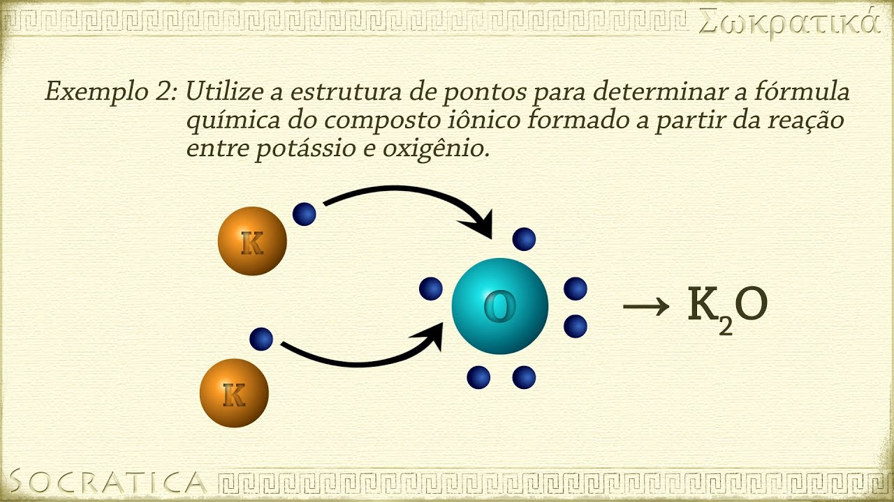

Quimica
Ligações iônicas e covalentes:
Como identificar qual será a ligação:
Primeiramente para realizarmos as ligações precisamos fazer a distribuição eletrônica dos átomos presentes para que possamos identificar se o átomo necessita ganhar ou perder elétrons, caso um dos átomos tenha que ganhar e o outro perder será ligação iônica, já se todos os átomos tiverem que ganhar elétron será ligação covalente
Exemplo:
O⁸ =2, 6 =G2
Na¹¹ =2, 8, 1 =P1
Nesse caso um dos átomos necessita ganhar 2 elétrons para se estabilizar e o outro precisa Perder 1 elétron, ou seja essa ligação é iônica Perder 1 elétron, ou seja essa ligação é iônica
(Dica) na ligação iônica após descobrirmos quantos elétrons um elemento precisa ganhar ou perder podemos simplesmente fazer uma "troca"
O⁸ = G2
Na¹¹ = P1
O² Na¹ ——¹O ²Na
Para saber mais clique na imagem :
